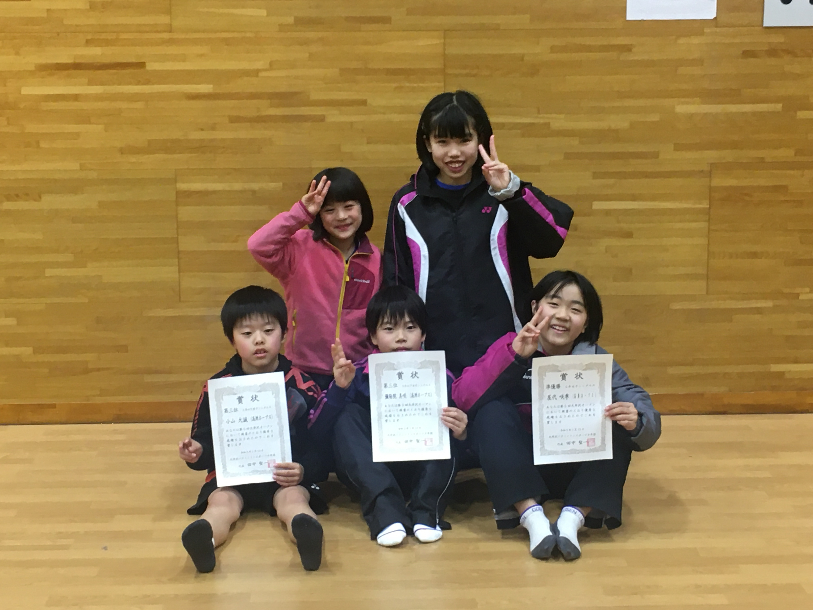

1月13日成人の日は茨城県で行われた大井沢オープンバドミントン大会に出場してきました。
この大会はステップアップを目的としたシングルス大会です。
各都道府県より220名の選手が集まり、ホープスからは5名が出場しました。
2会場に分かれて、少人数にも関わらずみんな大きな声で応援し、よく頑張りました。
結果は:
5年女子準優勝:さき
2年男子3位:たいせい
2年女子3位:みさき
沢山のコーチからのお褒めやアドバイスを大切に、これからも練習に励んでいきましょう。
2020.01.19 23:15

1月13日成人の日は茨城県で行われた大井沢オープンバドミントン大会に出場してきました。
この大会はステップアップを目的としたシングルス大会です。
各都道府県より220名の選手が集まり、ホープスからは5名が出場しました。
2会場に分かれて、少人数にも関わらずみんな大きな声で応援し、よく頑張りました。
結果は:
沢山のコーチからのお褒めやアドバイスを大切に、これからも練習に励んでいきましょう。